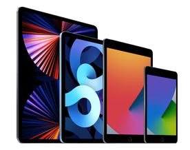
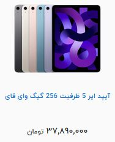
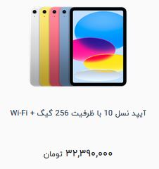
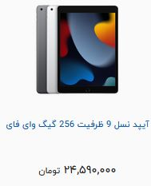
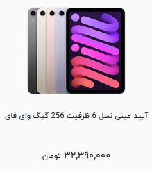

در ژانویه 2010، کمپانی اپل برای وارد شدن به بازار جذاب و پر رقابت تبلت ها، اقدام به رونمایی تبلت انحصاری خود با نام آیپد کرد. آیپد تبلتی با سیستم عامل ios میباشد که سازگاری بالایی با آیفون و مک بوک ها داشته و مانند سایر محصولات اپل، از نظر سخت افزاری و قدرت پردازش و سرعت، در جایگاه برتری نسبت به رقبای همرده خود قرار میگیرد. در ابتدا ایپد تنها در یک مدل با صفحه نمایش 9.7 اینچی رونمایی شد، اما به مرور زمان و افزایش تقاضا، اپل اقدام به معرفی نمونه ها جدیدتر و مدل های گسترده تری کرد. امروزه ای پد ها در نمونه های ایپد 10، ایپد ایر و ایپد پرو و با صفحه نمایش های 11 و 12.9 اینچی به بازار عرضه میشوند. 
آیپد ها از بهترین تبلت های موجود در بازار هستند که توسط شرکت اپل تولید میشوند. این تبلت ها چهار نوع مختلف دارند که یکی از بهترین آن ها آیپد ایر (iPad Air) است. این تبلت سبک و زیبا، از محصولات جذاب اپل است که تقریبا تمامی ویژگیهای خوب را دارد و عملکرد مناسبی نیز در اختیار کاربران قرار میدهد. در جدیدترین نسخه عرضه شده از این تبلت، شرکت اپل از پردازنده قدرتمند خود به نام M1 استفاده کرده است. 
اولین آیپد از زمان انتشارش، کاملا مشخص بود که زندگی کاربران را قرار است خیلی تحتتاثیر بگذارد و همین هم شد. سری تبلتهای هوشمند شرکت اپل، به یکی از بهترین محصولات دیجیتالی بازار تبدیل شدند که مزایای زیادی را برای تمامی کاربران به ارمغان آوردند. 
آیپد نسل 9 یکی سری تبلت های شرکت بزرگ اپل است که با سخت افزار جذاب خود توانسته است دل درصد زیادی از کاربران را به دست آورد. در میان گرانیهای تبلتهای هوشمند، این سری از تبلت های هوشمند شرکت اپل، قیمتی مقرون به صرفه دارد، در عین حال سختافزاری دارد که همچنان از تبلتهای اندرویدی بهتر است. برای آشنایی بیشتر در این مطلب همراه ما باشید. 
آی پد ها یکی از بهترین تبلتها در بازار دیجیتال هستند که توسط شرکت اپل ساخته میشوند. این سری از تبلتهای اپل در چهار نوع مختلف به بازار هر سال عرضه میشوند. این چهار سری شامل: آیپد، آیپد مینی، آیپد ایر و آیپد پرو میشوند که شما میتوانید نسخه پرو این تبلتها را در دو سایز تهیه کنید. با خرید یکی از این تبلتها میتوانید به لطف سرعت پردازش بالای آنها فعالیتهای روزمره خود را خیلی سریعتر انجام دهید. آیپد مینی 6 یکی از جدیدترین سریهای آیپد است که قابلیتهای جذابی مانند صفحه نمایشگر عالی، شارژدهی مناسب و سرعت پردازش بالا در اختیار کاربران قرار میدهد. 